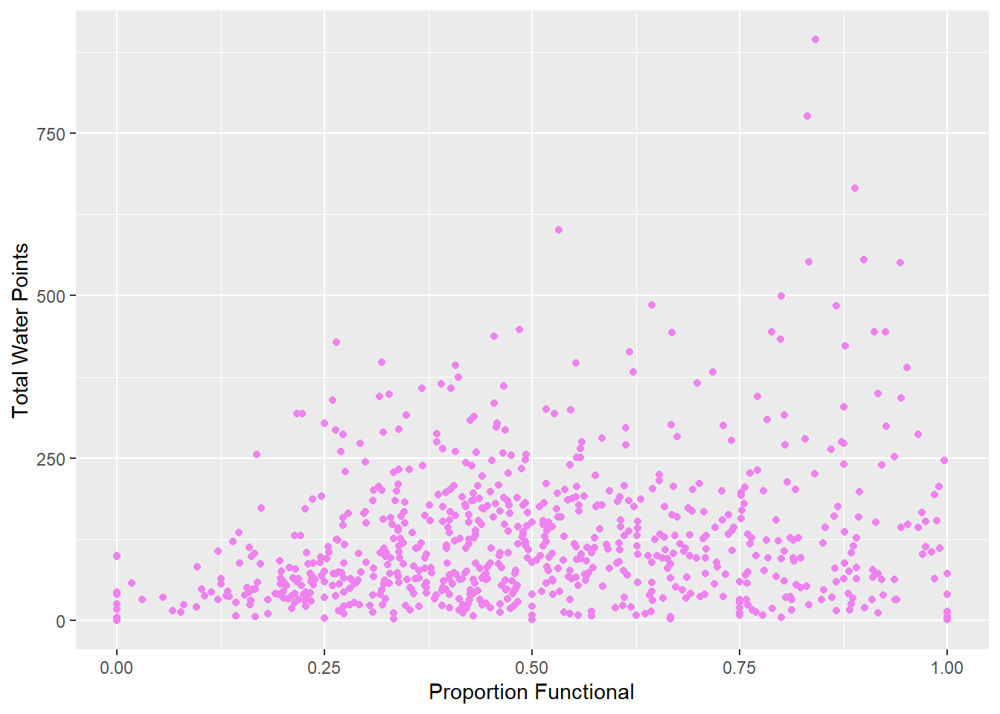

pacman::p_load(sf, tidyverse, funModeling)In-Class Exercise 2: Thematic and Analytical Mapping
Import
Libraries
Geospatial Data
Nigeria Level-2 Administrative Boundaries from Humanitarian Data Exchange or GeoBoundaries
geoNGA <- st_read(dsn = "data/geospatial/geoNGA",
layer = "geoBoundaries-NGA-ADM2") %>%
st_transform(crs = 26392)Reading layer `geoBoundaries-NGA-ADM2' from data source
`C:\Jenpoer\IS415-GAA\In-Class-Exercises\chapter-02\data\geospatial\geoNGA'
using driver `ESRI Shapefile'
Simple feature collection with 774 features and 5 fields
Geometry type: MULTIPOLYGON
Dimension: XY
Bounding box: xmin: 2.668534 ymin: 4.273007 xmax: 14.67882 ymax: 13.89442
Geodetic CRS: WGS 84nga <- st_read(dsn = "data/geospatial/NGA",
layer = "nga_admbnda_adm2_osgof_20190417") %>%
st_transform(crs = 26392)Reading layer `nga_admbnda_adm2_osgof_20190417' from data source
`C:\Jenpoer\IS415-GAA\In-Class-Exercises\chapter-02\data\geospatial\NGA'
using driver `ESRI Shapefile'
Simple feature collection with 774 features and 16 fields
Geometry type: MULTIPOLYGON
Dimension: XY
Bounding box: xmin: 2.668534 ymin: 4.273007 xmax: 14.67882 ymax: 13.89442
Geodetic CRS: WGS 84Aspatial Data
wp_nga <- read_csv("data/aspatial/WPDX.csv") %>%
filter(`#clean_country_name` == "Nigeria")Data Preprocessing
Converting Aspatial Data into Geospatial
Convert wkt field into sfc field (i.e. simple feature object) by using st_as_sfc() - to give structure.
wp_nga$Geometry = st_as_sfc(wp_nga$`New Georeferenced Column`)
glimpse(wp_nga)Rows: 95,008
Columns: 71
$ row_id <dbl> 429068, 222071, 160612, 160669, 160642, …
$ `#source` <chr> "GRID3", "Federal Ministry of Water Reso…
$ `#lat_deg` <dbl> 7.980000, 6.964532, 6.486940, 6.727570, …
$ `#lon_deg` <dbl> 5.120000, 3.597668, 7.929720, 7.648670, …
$ `#report_date` <chr> "08/29/2018 12:00:00 AM", "08/16/2015 12…
$ `#status_id` <chr> "Unknown", "Yes", "Yes", "Yes", "Yes", "…
$ `#water_source_clean` <chr> NA, "Borehole", "Borehole", "Borehole", …
$ `#water_source_category` <chr> NA, "Well", "Well", "Well", "Well", "Wel…
$ `#water_tech_clean` <chr> "Tapstand", "Mechanized Pump", "Hand Pum…
$ `#water_tech_category` <chr> "Tapstand", "Mechanized Pump", "Hand Pum…
$ `#facility_type` <chr> "Improved", "Improved", "Improved", "Imp…
$ `#clean_country_name` <chr> "Nigeria", "Nigeria", "Nigeria", "Nigeri…
$ `#clean_adm1` <chr> "Ekiti", "Ogun", "Ebonyi", "Enugu", "Enu…
$ `#clean_adm2` <chr> "Moba", "Obafemi-Owode", "Ohaukwu", "Isi…
$ `#clean_adm3` <chr> NA, NA, NA, NA, NA, NA, NA, NA, NA, NA, …
$ `#clean_adm4` <chr> NA, NA, NA, NA, NA, NA, NA, NA, NA, NA, …
$ `#install_year` <dbl> NA, NA, NA, NA, NA, NA, NA, 2016, 2016, …
$ `#installer` <chr> NA, NA, NA, NA, NA, NA, NA, NA, NA, NA, …
$ `#rehab_year` <lgl> NA, NA, NA, NA, NA, NA, NA, NA, NA, NA, …
$ `#rehabilitator` <lgl> NA, NA, NA, NA, NA, NA, NA, NA, NA, NA, …
$ `#management_clean` <chr> NA, "Other", NA, NA, NA, NA, NA, NA, NA,…
$ `#status_clean` <chr> NA, "Functional", NA, NA, NA, NA, NA, NA…
$ `#pay` <chr> NA, "No", NA, NA, NA, NA, NA, NA, NA, NA…
$ `#fecal_coliform_presence` <chr> NA, NA, NA, NA, NA, NA, NA, NA, NA, NA, …
$ `#fecal_coliform_value` <dbl> NA, NA, NA, NA, NA, NA, NA, NA, NA, NA, …
$ `#subjective_quality` <chr> NA, "Acceptable quality", NA, NA, NA, NA…
$ `#activity_id` <chr> "1a117ba2-5256-4801-874c-f7611a4499dd", …
$ `#scheme_id` <chr> NA, NA, NA, NA, NA, NA, NA, NA, NA, NA, …
$ `#wpdx_id` <chr> "6FV7X4JC+222", "6FR5XH7X+R37", "6FR9FWP…
$ `#notes` <chr> "Tap Water", "Ajura", NA, NA, NA, NA, NA…
$ `#orig_lnk` <chr> "https://nigeria.africageoportal.com/dat…
$ `#photo_lnk` <chr> NA, NA, NA, NA, NA, NA, NA, NA, NA, NA, …
$ `#country_id` <chr> "NG", "NG", "NG", "NG", "NG", "NG", "NG"…
$ `#data_lnk` <chr> "https://catalog.waterpointdata.org/data…
$ `#distance_to_primary_road` <dbl> 767.3742, 13364.9005, 9492.7619, 9319.08…
$ `#distance_to_secondary_road` <dbl> 921.79187, 48.87743, 4333.34280, 23276.3…
$ `#distance_to_tertiary_road` <dbl> 3146.733237, 4167.519068, 693.211204, 30…
$ `#distance_to_city` <dbl> 41049.944, 13898.649, 27381.922, 34823.6…
$ `#distance_to_town` <dbl> 959.365, 9405.783, 72060.118, 31665.447,…
$ water_point_history <chr> "{\"2018-08-29\": {\"source\": \"GRID3\"…
$ rehab_priority <dbl> NA, NA, NA, NA, NA, NA, NA, NA, NA, NA, …
$ water_point_population <dbl> NA, 140, 0, 492, 868, 81, 0, 9969, 933, …
$ local_population_1km <dbl> NA, 887, 0, 492, 1919, 81, 0, 13740, 933…
$ crucialness_score <dbl> NA, 0.1578354, NA, 1.0000000, 0.4523189,…
$ pressure_score <dbl> NA, 0.1400000, NA, 1.6400000, 2.8933333,…
$ usage_capacity <dbl> 250, 1000, 300, 300, 300, 300, 300, 1000…
$ is_urban <lgl> TRUE, FALSE, FALSE, FALSE, FALSE, FALSE,…
$ days_since_report <dbl> 1483, 2592, 655, 655, 655, 655, 655, 217…
$ staleness_score <dbl> 62.65911, 44.17405, 81.34550, 81.34550, …
$ latest_record <lgl> TRUE, TRUE, TRUE, TRUE, TRUE, TRUE, TRUE…
$ location_id <dbl> 358773, 264633, 397972, 397984, 397982, …
$ cluster_size <dbl> 1, 1, 1, 1, 1, 1, 1, 1, 1, 1, 1, 1, 1, 1…
$ `#clean_country_id` <chr> "NGA", "NGA", "NGA", "NGA", "NGA", "NGA"…
$ `#country_name` <chr> "Nigeria", "Nigeria", "Nigeria", "Nigeri…
$ `#water_source` <chr> "Tap", "Improved Tube well or borehole",…
$ `#water_tech` <chr> NA, "Motorised", NA, NA, NA, NA, NA, "Su…
$ `#status` <chr> NA, "Functional (and in use)", NA, NA, N…
$ `#adm2` <chr> NA, "Obafemi-Owode", NA, NA, NA, NA, NA,…
$ `#adm3` <chr> NA, NA, NA, NA, NA, NA, NA, NA, NA, NA, …
$ `#management` <chr> NA, "Other", NA, NA, NA, NA, NA, NA, NA,…
$ `#adm1` <chr> NA, "Ogun", "Enugu", "Enugu", "Enugu", "…
$ `New Georeferenced Column` <chr> "POINT (5.12 7.98)", "POINT (3.5976683 6…
$ lat_deg_original <dbl> NA, NA, NA, NA, NA, NA, NA, NA, NA, NA, …
$ lat_lon_deg <chr> "(7.98°, 5.12°)", "(6.9645317°, 3.597668…
$ lon_deg_original <dbl> NA, NA, NA, NA, NA, NA, NA, NA, NA, NA, …
$ public_data_source <chr> "https://catalog.waterpointdata.org/data…
$ converted <chr> NA, "#status_id, #water_source, #pay, #s…
$ count <dbl> 1, 1, 1, 1, 1, 1, 1, 1, 1, 1, 1, 1, 1, 1…
$ created_timestamp <chr> "12/06/2021 09:12:57 PM", "06/30/2020 12…
$ updated_timestamp <chr> "12/06/2021 09:12:57 PM", "06/30/2020 12…
$ Geometry <POINT> POINT (5.12 7.98), POINT (3.597668 6.9…We need to use 4326 because we want to put back the projection information first, as it is from aspatial data.
wp_sf <- st_sf(wp_nga, crs=4326)
wp_sfSimple feature collection with 95008 features and 70 fields
Geometry type: POINT
Dimension: XY
Bounding box: xmin: 2.707441 ymin: 4.301812 xmax: 14.21828 ymax: 13.86568
Geodetic CRS: WGS 84
# A tibble: 95,008 × 71
row_id `#source` #lat_…¹ #lon_…² #repo…³ #stat…⁴ #wate…⁵ #wate…⁶ #wate…⁷
* <dbl> <chr> <dbl> <dbl> <chr> <chr> <chr> <chr> <chr>
1 429068 GRID3 7.98 5.12 08/29/… Unknown <NA> <NA> Tapsta…
2 222071 Federal Minis… 6.96 3.60 08/16/… Yes Boreho… Well Mechan…
3 160612 WaterAid 6.49 7.93 12/04/… Yes Boreho… Well Hand P…
4 160669 WaterAid 6.73 7.65 12/04/… Yes Boreho… Well <NA>
5 160642 WaterAid 6.78 7.66 12/04/… Yes Boreho… Well Hand P…
6 160628 WaterAid 6.96 7.78 12/04/… Yes Boreho… Well Hand P…
7 160632 WaterAid 7.02 7.84 12/04/… Yes Boreho… Well Hand P…
8 642747 Living Water … 7.33 8.98 10/03/… Yes Boreho… Well Mechan…
9 642456 Living Water … 7.17 9.11 10/03/… Yes Boreho… Well Hand P…
10 641347 Living Water … 7.20 9.22 03/28/… Yes Boreho… Well Hand P…
# … with 94,998 more rows, 62 more variables: `#water_tech_category` <chr>,
# `#facility_type` <chr>, `#clean_country_name` <chr>, `#clean_adm1` <chr>,
# `#clean_adm2` <chr>, `#clean_adm3` <chr>, `#clean_adm4` <chr>,
# `#install_year` <dbl>, `#installer` <chr>, `#rehab_year` <lgl>,
# `#rehabilitator` <lgl>, `#management_clean` <chr>, `#status_clean` <chr>,
# `#pay` <chr>, `#fecal_coliform_presence` <chr>,
# `#fecal_coliform_value` <dbl>, `#subjective_quality` <chr>, …Projection transformation
Transform from WGS84 to Nigeria’s projected coordinate system.
wp_sf <- wp_sf %>%
st_transform(crs = 26392)Geospatial Data Cleaning
Select necessary columns only
nga <- nga %>% select(c(3:4, 8:9))Check for duplicate names
duplicated_LGA <- nga$ADM2_EN[duplicated(nga$ADM2_EN)==TRUE]
duplicated_LGA[1] "Bassa" "Ifelodun" "Irepodun" "Nasarawa" "Obi" "Surulere"There are 6 LGAs with the same name, but in different states.
So, we plan to concatenate the state name to the duplicated names. First, we try to get the indices.
duplicated_indices <- which(nga$ADM2_EN %in% duplicated_LGA)
duplicated_indices [1] 94 95 304 305 355 356 519 520 546 547 693 694Then, we concatenate the state name to the duplicated names.
for (ind in duplicated_indices) {
nga$ADM2_EN[ind] <- paste(nga$ADM2_EN[ind], nga$ADM1_EN[ind], sep=", ")
}Replace unknown values and rename columns
wp_sf <- wp_sf %>%
rename(status_clean = '#status_clean') %>%
select(status_clean) %>%
mutate(status_clean = replace_na(
status_clean, "unknown"
))Water Point Analysis
Calculate proportion of Functional and Non-Functional Water Points at LGA Level
Check the column that contains if water point is functional or not. By using unique(), we can extract the unique values of each column.
unique(wp_sf$`status_clean`)[1] "unknown" "Functional"
[3] "Abandoned/Decommissioned" "Non-Functional"
[5] "Functional but not in use" "Functional but needs repair"
[7] "Abandoned" "Non functional due to dry season"
[9] "Non-Functional due to dry season"Get the number of functional water points per LGA
functional <- wp_sf %>% filter(`status_clean` %in%
c("Functional",
"Functional but not in use",
"Functional but needs repair"))
WP_Functional <- lengths(st_intersects(nga, functional))Get the number of non-functional water points per LGA
non_functional <- wp_sf %>% filter(`status_clean` %in%
c("Abandoned/Decommissioned",
"Non-Functional due to dry season",
"Non-Functional",
"Abandoned",
"Non functional due to dry season"))
WP_Non_Functional <- lengths(st_intersects(nga, non_functional))Get the unknown water points
unknown <- wp_sf %>% filter(`status_clean` %in%
c("unknown"))
WP_Unknown <- lengths(st_intersects(nga, unknown))Get the total number of water points per LGA
WP_Total <- lengths(st_intersects(nga, wp_sf))Combining aspatial and spatial data into simple feature tibble
Create a copy of the nga data frame with WP_Functional, WP_Non_Functional, WP_Unknown, and WP_Total
nga_combined <- nga %>%
mutate(WP_Functional) %>%
mutate(WP_Non_Functional) %>%
mutate(WP_Unknown) %>%
mutate(WP_Total)Save as RDS
saveRDS(nga_combined, file = "data/rds/NGA_wp.rds")Create columns:
WP_Functional_Proportion: Proportion of functional water points (number of functional water points / total number of water points)
WP_Non_Functional_Proportion: Proportion of non-functional water points (number of non-functional water points / total number of water points)
nga_combined <- nga_combined %>%
mutate(`WP_Functional_Proportion` = `WP_Functional`/`WP_Total`,
`WP_Non_Functional_Proportion` = `WP_Non_Functional`/`WP_Total`)Replace NaN values (caused by 0 / 0) in the new columns with 0
nga_combined$`WP_Functional_Proportion`[is.na(nga_combined$`WP_Functional_Proportion`)] = 0
nga_combined$`WP_Non_Functional_Proportion`[is.na(nga_combined$`WP_Non_Functional_Proportion`)] = 0Display the first 5 rows of the new tibble
head(nga_combined, n=5)Simple feature collection with 5 features and 10 fields
Geometry type: MULTIPOLYGON
Dimension: XY
Bounding box: xmin: 481088 ymin: 98142.39 xmax: 1248985 ymax: 1079710
Projected CRS: Minna / Nigeria Mid Belt
ADM2_EN ADM2_PCODE ADM1_EN ADM1_PCODE
1 Aba North NG001001 Abia NG001
2 Aba South NG001002 Abia NG001
3 Abadam NG008001 Borno NG008
4 Abaji NG015001 Federal Capital Territory NG015
5 Abak NG003001 Akwa Ibom NG003
geometry WP_Functional WP_Non_Functional WP_Unknown
1 MULTIPOLYGON (((548795.5 11... 7 9 1
2 MULTIPOLYGON (((547286.1 11... 29 35 7
3 MULTIPOLYGON (((1248985 104... 0 0 0
4 MULTIPOLYGON (((510864.9 57... 23 34 0
5 MULTIPOLYGON (((594269 1209... 23 25 0
WP_Total WP_Functional_Proportion WP_Non_Functional_Proportion
1 17 0.4117647 0.5294118
2 71 0.4084507 0.4929577
3 0 0.0000000 0.0000000
4 57 0.4035088 0.5964912
5 48 0.4791667 0.5208333Visualise distribution of water points with analytical plot
Plot the frequency table by status_clean
freq(wp_sf, input = "status_clean")
status_clean frequency percentage cumulative_perc
1 Functional 45883 48.29 48.29
2 Non-Functional 29385 30.93 79.22
3 unknown 10656 11.22 90.44
4 Functional but needs repair 4579 4.82 95.26
5 Non-Functional due to dry season 2403 2.53 97.79
6 Functional but not in use 1686 1.77 99.56
7 Abandoned/Decommissioned 234 0.25 99.81
8 Abandoned 175 0.18 99.99
9 Non functional due to dry season 7 0.01 100.00Plot distribution of water points by LGA
ggplot(data=nga_combined,
aes(x=`WP_Total`))+
geom_histogram(bins=20,
color="black",
fill="light blue") +
geom_vline(aes(xintercept=mean(`WP_Total`, na.rm=T)),
color="red",
linetype="dashed",
linewidth=0.8) +
ggtitle("Distribution of total water points by LGA") +
xlab("No. of water points") +
ylab("No. of\nLGAs") +
theme(axis.title.y=element_text(angle = 0))
From the histogram, we can see that most LGAs have around 100-200 water points.
Scatter plot between proportion of functional water points vs. number of total water points
ggplot(data=nga_combined,
aes(y = `WP_Total`,
x= as.numeric(`WP_Functional_Proportion`)))+
geom_point(color="violet") +
labs(x = "Proportion Functional",
y = "Total Water Points")